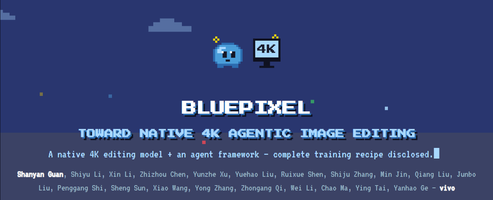

BluePixel: Toward Native 4K Agentic Image Editing
Native 4K image editing with an agent framework that decomposes instructions, verifies results, and retries edits. Progressive adaptation and four-step distillation enable efficient high-resolution editing.